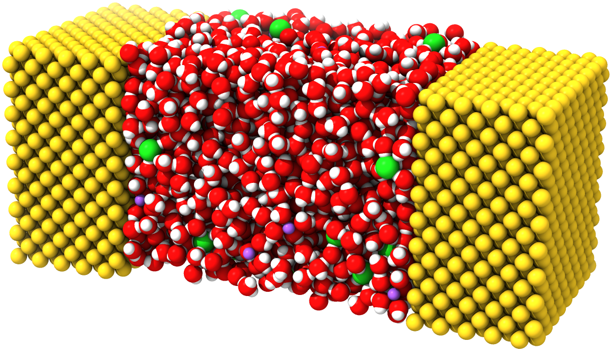
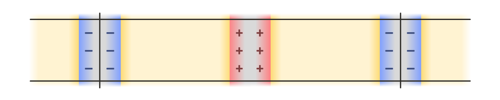
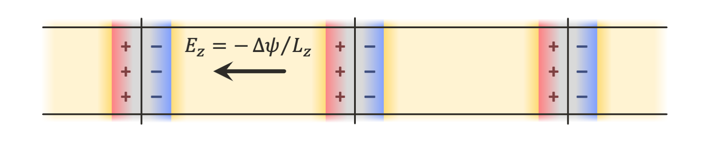

Simulating Conductive Electrodes with the Constant Potential Method¶
The constant potential molecular dynamics method is an approach for simulating conductive materials with delocalized charges, and maintaining them at prescribed electric potentials. In constant potential simulations, the charges on a prescribed set of particles (those belonging to the conductive material, or the “electrode particles”) are allowed to fluctuate as they interact with other particles in the system. This is useful for studying various kinds of electrochemical systems, e.g., the electrode-electrolyte interface in a parallel plate capacitor. In this tutorial, we will show how to set up a constant potential simulation using OpenMM’s implementation of this method. Specifically, we will use a capacitor system described in Ref. 1, with an aqueous NaCl electrolyte sandwiched between two Au electrodes:

Theory¶
A full exposition of the theory behind constant potential simulations is beyond the scope of this tutorial, but it is useful to be acquainted with the basics before getting started. In ordinary molecular simulations with fixed charges, we wish to sample configurations \(\mathbf{r}^N\) of \(N\) particles based on some potential energy function \(U(\mathbf{r}^N)\). In the constant potential approach, some number \(M\) of particles are allowed to have varying charges, so that we have \(U(\mathbf{r}^N,\mathbf{q}^M)\). The commonly used method implemented by OpenMM for constant potential simulations uses a Born-Oppenheimer-like approach in which \(\mathbf{q}^M\) is chosen at every step to minimize \(U\) for the given \(\mathbf{r}^N\). Since electrostatic interactions can be treated with Coulomb’s law, \(U\) is quadratic in the \(\mathbf{q}^M\), and minimizing it is equivalent to solving a linear system.
Actually computing the coefficients of this system, which are functions of the particle positions, is more complex. For parallel plate capacitor geometries like the one shown above, the system effectively has periodic boundary conditions in the plane of the electrodes, but is non-periodic in the direction normal to their surfaces.
There are a few options for using periodic boundary conditions in all three dimensions so that standard tools for computing the electrostatic interactions, such as the particle mesh Ewald method, can be employed. Leaving empty space between periodic images introduces various complications, since this effectively creates a pair of dissimilar capacitors, one containing an electrolyte material of interest, and another containing vacuum. Another option is a double cell geometry, with each periodic image containing the capacitor system of interest and a reflected copy of it. This keeps the net potential difference across the simulation cell, and its net dipole moment, zero:

The implementation in OpenMM supports such geometries, but they are more computationally expensive, requiring double the number of particles in the system of interest. In this tutorial, we show how to use the finite field method described in Ref. 2, in which only a single copy of the system is needed, and an external electric field is applied to all charges in the system to maintain the desired electric potential difference across the periodic box:

There are many more details that this tutorial will not explore, but the reader is referred to Refs. 1-3 for more information about the theory, as well as to the user guide for the details of the specific implementation in OpenMM.
Setting Parameters¶
To begin writing a script implementing the capacitor system in OpenMM, we first import the required packages:
[1]:
import openmm
import openmm.app
import openmm.unit
We can now define various parameters for the simulation. An appropriate geometry, force field, and parameters for a constant potential simulation will depend on the system you are interested in; here, we use data provided with the work of Ref. 1. Generic interaction-related parameters can be set in force field files that we will load later, but we will specify constant potential-related parameters as well as integration settings directly in the script.
We begin with the potential we want to place across the plates of the capacitor:
[2]:
VOLT = openmm.unit.volt * openmm.unit.AVOGADRO_CONSTANT_NA
POTENTIAL = 2.0 * VOLT
Note that we multiply OpenMM’s volt unit by AVOGADRO_CONSTANT_NA. This is because, in OpenMM’s default unit system, which uses \(\mathrm{kJ/mol}\) for energy, and the elementary charge \(\mathrm{e}\) for charge, the units of electric potential are \(\mathrm{kJ/mol/e}\). OpenMM’s volt unit is missing the factor of \(1/\mathrm{mol}\), so multiplying by the Avogadro constant accounts for it. For more information, see the discussion on units in the Building Systems from
Scratch introductory tutorial.
Next, we define a parameter (commonly referred to as \(\eta\) in the constant potential literature) that controls the width of the distributions of charges on electrode atoms in the simulation. The constant potential method as commonly formulated (and as implemented in OpenMM) uses Gaussian charge distributions, rather than point charges, for electrode atoms, since it is necessary to account for the self-interaction energy of the electrode charges to obtain a well-defined minimum to the potential energy with respect to the charges. The resulting functional form of the electrostatic interactions is detailed in the theory section of the user guide.
For the matter of choosing an appropriate value of \(\eta\) for a given system, the reader is referred to Ref. 4. Here, we simply use the value chosen in Ref. 1.
[3]:
ETA = 0.955234657 / openmm.unit.bohr
OpenMM’s constant potential implementation supports the Thomas-Fermi model, a simple semiclassical approximation to account for screening in imperfect conductors (for details, refer again to Ref. 1). This model requires a Thomas-Fermi length controlling the strength of the screening, and a volume per atom corresponding to the reciprocal of the atomic number density in the electrode material (sometimes referred to as a “Voronoi volume” in the literature).
[4]:
L_TF = 9.44863 * openmm.unit.bohr
V_TF = 113.74173222606741 * openmm.unit.bohr ** 3
Finally, we specify a cutoff distance for the nonbonded interactions and set some standard parameters for integrating the system. Note that for the constant potential method, the cutoff distance should be large enough to avoid truncation artifacts in the interactions of the Gaussian charge distributions on the electrode atoms (see the theory section of the user guide). For typical values of the cutoff distance \(\ge10\ \mathrm{Å}\) and Gaussian parameter \(\eta\approx 2/\mathrm{Å}\), this should not be an issue. For more details on choosing appropriate integration parameters, see the Selecting Values for Simulation Parameters tutorial.
[5]:
R_CUT = 22.68 * openmm.unit.bohr # 12 Å
TEMP = 298.0 * openmm.unit.kelvin
FRICTION = 1.0 / openmm.unit.picosecond
STEP = 4.0 * openmm.unit.femtosecond
Creating the System¶
With all of the parameters defined, we can start building the OpenMM System object. The constant potential method in OpenMM is implemented in the ConstantPotentialForce class. To use it, we must add it to a System like any other force, add particles with charges that would ordinarily be set in a NonbondedForce, and specify various constant potential-specific options that will be discussed below.
To make it easier to set up the simulation for this tutorial, we have converted the data provided with Ref. 1 into a PDB file included with the tutorial. We can load it to obtain a Topology for the capacitor system, as well as initial coordinates for the simulation.
[6]:
pdb = openmm.app.PDBFile("constant_potential.pdb")
The PDB file is structured so as to arrange the atoms into four different chains. Since there are no physical chains in this system, this arrangement only serves to group atoms together in a convenient way. The first chain contains the water molecules, the second contains the ions, and the third and fourth contain the atoms in the negative and positive electrodes, respectively:
REMARK 1 CREATED WITH OPENMM 8.4, 2025-11-21
CRYST1 36.630 36.630 107.952 90.00 90.00 90.00 P 1 1
HETATM 1 O HOH A 1 11.142 0.802 28.170 1.00 0.00 O
HETATM 2 H1 HOH A 1 11.545 -0.100 28.325 1.00 0.00 H
HETATM 3 H2 HOH A 1 11.052 1.281 29.044 1.00 0.00 H
...
HETATM 6478 O HOH A2160 17.737 27.459 36.530 1.00 0.00 O
HETATM 6479 H1 HOH A2160 18.729 27.349 36.463 1.00 0.00 H
HETATM 6480 H2 HOH A2160 17.524 28.388 36.833 1.00 0.00 H
TER 6481 HOH A2160
HETATM 6482 NA NA B 1 7.994 30.504 24.998 1.00 0.00 Na
HETATM 6483 CL CL B 2 21.001 26.555 32.728 1.00 0.00 Cl
...
HETATM 6558 NA NA B 77 0.677 11.774 51.823 1.00 0.00 Na
HETATM 6559 CL CL B 78 34.536 2.353 48.278 1.00 0.00 Cl
TER 6560 CL B 78
HETATM 6561 AU AU C 1 0.000 0.000 3.911 1.00 0.00 Au
...
HETATM 8180 AU AU C1620 34.595 34.595 20.191 1.00 0.00 Au
TER 8181 AU C1620
HETATM 8182 AU AU D 1 0.000 0.000 72.895 1.00 0.00 Au
...
HETATM 9801 AU AU D1620 34.595 34.595 89.175 1.00 0.00 Au
TER 9802 AU D1620
END
Although it will be useful in this tutorial, such a grouping is not required to use the constant potential method in OpenMM. If you are designing your own simulation setup, you may find it convenient to structure your topology differently; what makes the most sense will vary from problem to problem.
To create a System, then, we need a ForceField to assign interaction parameters. Ref. 1 uses SPC/E water, so we will use a force field file for SPC/E, amber19/spce.xml, that is distributed with OpenMM and also contains parameters for NaCl. (These are different from the parameters chosen in Ref.
1, so its results will not be exactly reproduced here, but the parameters are suitable for illustrative purposes.) This leaves the Au atoms, which we can write a simple force field file to provide the Lennard-Jones parameters from Ref. 1 for.
[7]:
%cat constant_potential_example_gold.xml
<ForceField>
<AtomTypes>
<Type name="Au" class="Au" element="Au" mass="0"/>
</AtomTypes>
<Residues>
<Residue name="AU">
<Atom name="AU" type="Au" />
</Residue>
</Residues>
<NonbondedForce coulomb14scale="0.8333333333333334" lj14scale="0.5">
<Atom type="Au" charge="0" sigma="0.2951" epsilon="22.13336" />
</NonbondedForce>
</ForceField>
We will not discuss OpenMM’s force field file format here; for a detailed description, see the user guide, and for a more complex but introductory example of building such a file, see the Implementing a Coarse-Grained Polymer Force Field tutorial. Here, we only need to define one atom type that will be applied to all of the Au atoms, define a residue template matching a single Au
atom (since each Au atom in the PDB file is in its own residue), and define Lennard-Jones parameters for Au. (The coulomb14scale and lj14scale parameters are set to match those in amber19/spce.xml but are irrelevant to our system as it contains only isolated atoms and rigid molecules.) Note that:
We have set the masses of all electrode atoms to zero, which fixes them in place. This is consistent with the simulation in the study of Ref. 1, but it is not a requirement for the use of the constant potential method in OpenMM. Some important notes for using non-rigid electrodes are provided at the end of this tutorial.
Here, we have set the charge on each Au atom to zero, but this value will be ignored once we set it in a ConstantPotentialForce that we will create later; the true charges will be calculated by solving the constant potential equations at every simulation timestep and so will fluctuate over the course of the simulation.
We can now create a ForceField and a System straightforwardly:
[8]:
force_field = openmm.app.ForceField("amber19/spce.xml", "constant_potential_example_gold.xml")
system = force_field.createSystem(pdb.topology, nonbondedMethod=openmm.app.CutoffPeriodic, nonbondedCutoff=R_CUT)
Even though our System should contain some charged particles on account of the water and ions within, such that we might ordinarily want to use PME for the nonbondedMethod, here we use CutoffPeriodic for reasons that will be explained in the next section.
Setting up the ConstantPotentialForce¶
OpenMM’s standard force field-based mechanism will create a NonbondedForce with parameters for both electrostatic and Lennard-Jones interactions between the particles in a System. To run a constant potential simulation, we need all of the electrostatic parameters to be specified in a ConstantPotentialForce instead. To do this, we can write a function that will identify the NonbondedForce in a System, add its charges to a newly created ConstantPotentialForce, and zero the charges in the NonbondedForce (so that the electrostatic interactions between particles with fixed charges will not be computed twice).
[9]:
def add_constant_potential(system):
# Extract exactly one NonbondedForce from the System.
lj, = (force for force in system.getForces() if isinstance(force, openmm.NonbondedForce))
# Create a new ConstantPotentialForce and add it to the System.
conp = openmm.ConstantPotentialForce()
system.addForce(conp)
# Process each particle in the NonbondedForce.
for i in range(lj.getNumParticles()):
q, sig, eps = lj.getParticleParameters(i)
lj.setParticleParameters(i, 0.0, sig, eps)
conp.addParticle(q)
# Process each exception in the NonbondedForce.
for k in range(lj.getNumExceptions()):
i, j, qq, sig, eps = lj.getExceptionParameters(k)
lj.setExceptionParameters(k, i, j, 0.0, sig, eps)
conp.addException(i, j, qq)
# Copy the nonbonded cutoff distance to the ConstantPotentialForce.
conp.setCutoffDistance(lj.getCutoffDistance())
# We will need to do some additional setup on the ConstantPotentialForce, so return it.
return conp
As shown in this relatively straightforward function, adding a particle to a ConstantPotentialForce is as simple as calling ConstantPotentialForce.addParticle() and providing the particle charge. Since it does not compute Lennard-Jones or other kinds of interactions, this is the only parameter accepted. Exceptions for particles bonded to each other can be added with ConstantPotentialForce.addException().
We can thus convert our system into a constant potential-enabled version, and get a reference to the newly added force:
[10]:
conp = add_constant_potential(system)
We also must specify which particles belong to conductive electrodes and should thus have fluctuating rather than fixed charges. We can do this with ConstantPotentialForce.addElectrode(), which accepts a list of particle indices. Since the third and fourth chains in the topology contain the Au atoms in each electrode, respectively, we can extract the appropriate indices. In addition, addElectrode() takes the potential at which to hold the electrode, a Gaussian width parameter that is the reciprocal of the commonly used \(\eta\) value, and a Thomas-Fermi parameter with units of reciprocal width that should be set to the square of the Thomas-Fermi length divided by the atomic volume. (To simulate a perfect conductor and eschew the Thomas-Fermi model entirely, set this parameter to zero.) In this example, for the potential difference \(\Delta\psi\) we want to apply, we set the potential of one electrode to \(-\Delta\psi/2\) and that of the other to \(\Delta\psi/2\).
[11]:
chains = list(pdb.topology.chains())
conp.addElectrode([atom.index for atom in chains[2].atoms()], -POTENTIAL / 2.0, 1.0 / ETA, L_TF * L_TF / V_TF)
conp.addElectrode([atom.index for atom in chains[3].atoms()], POTENTIAL / 2.0, 1.0 / ETA, L_TF * L_TF / V_TF);
This method of using the add_constant_potential() function given here, then specifying the appropriate electrodes, should be adaptable to your own constant potential simulations. A few important notes are in order:
Each atom may belong to at most one electrode. Note, however, that all “electrodes” added to a ConstantPotentialForce are permitted to exchange charge freely with each other, and the concept of an “electrode” in the OpenMM implementation only serves to group electrode particles with similar parameters together.
Though only some atoms in this example belong to an electrode, it is still always necessary to add every particle to the ConstantPotentialForce, and zero each charge in the NonbondedForce. When using ConstantPotentialForce in a System, all Coulombic interactions must be accounted for by a single ConstantPotentialForce. Setting charges in more than one ConstantPotentialForce, or any other force like a NonbondedForce or AmoebaMultipoleForce, will yield incorrect simulation results, since ConstantPotentialForce needs to account for the charges on every particle to properly solve for the charge distributions in the electrodes.
Since no non-zero charges remain in the NonbondedForce, we have used
CutoffPeriodicrather thanPMEfor the nonbonded interaction calculation method when creating the system. The ConstantPotentialForce always uses particle mesh Ewald to compute interactions, so there is no option to control the method it uses for computing interactions.
Constant Potential-Specific Options¶
OpenMM’s implementation of constant potential offers two methods for solving for the electrode charges. The default conjugate gradient (CG) solver is applicable to all simulation configurations, but is an iterative method, requiring multiple evaluations of the derivatives of the energy with respect to the electrode per timestep. Thus, OpenMM also offers a matrix solver that precomputes the inverse of the coefficient matrix for the linear equations to be solved; this only requires a single evaluation of the derivatives per timestep. However:
Since the coefficients of this matrix are functions of the electrode atom positions, the matrix solver can only be used if all electrode atoms are fixed in place by zeroing their masses.
Inverting the matrix takes \(\mathcal{O}(M^3)\) time whenever a simulation is started or the electrode atom positions are adjusted, and the solver requires \(\mathcal{O}(M^2)\) space to store the inverse, where \(M\) is the number of electrode atoms.
If you want to perform a simulation with non-rigid electrodes, you must use the default CG solver. Otherwise, the matrix solver may be faster for smaller systems, whereas the CG solver is typically faster above a certain system size threshold. This crossover point is dependent on the details of your system and the hardware that OpenMM is running on, so you should evaluate both solvers and choose the one with the best performance, or choose the CG solver if the matrix solver requires too much memory. Here, we use the matrix solver, but again, this may not be the best choice for every system even if it is applicable here:
[12]:
conp.setConstantPotentialMethod(openmm.ConstantPotentialForce.Matrix)
Constant potential simulations are typically performed with a constraint of constant total charge. Both solvers in OpenMM’s implementation can enforce such a constraint:
[13]:
conp.setUseChargeConstraint(True)
By default, the total charge of the system, which includes both the variable (electrode) and fixed (electrolyte) charges, will be constrained to zero when the charge constraint is enabled, but this can be controlled with ConstantPotential.setChargeConstraintTarget() if desired.
Finally, as we have mentioned above, we want to set up a finite field constant potential simulation. Here, for the set of initial coordinates we will read in, the electrode with the higher potential has a larger displacement along the \(z\)-axis than that with the lower potential, so we set the electric field vector as follows:
[14]:
L_Z = pdb.topology.getPeriodicBoxVectors()[2][2]
conp.setExternalField((0.0, 0.0, -POTENTIAL / L_Z))
If you have performed constant potential simulations in LAMMPS, for instance, it is required to use exactly two electrodes, and space them apart along the \(z\)-axis: then the external electric field will be added automatically. The OpenMM implementation places no such restrictions on the geometry; the electrodes and electric field can be oriented in any way desired.
Finally, we add the forces to the system, set the periodic box vectors, create a Langevin integrator for temperature control, and create a Simulation:
[15]:
integrator = openmm.LangevinMiddleIntegrator(TEMP, FRICTION, STEP)
simulation = openmm.app.Simulation(pdb.topology, system, integrator)
Running the Simulation¶
We will now load some initial position coordinates for the simulation. Like the simulation parameters, these are adapted from the data provided with Ref. 1.
[16]:
simulation.context.setPositions(pdb.positions)
The capacitance \(C\) of the system at the applied potential can be calculated from \(Q=C\Delta\psi\), where \(Q\) is the charge on an electrode. We can write a custom reporter class (see the Loading Input Files and Reporting Results introductory tutorial for more information on custom reporters) to calculate the capacitance. Calling ConstantPotentialForce.getCharges() with a Context will return the charges of all particles in the system. For those not part of an electrode, these will be the charges that were specified with ConstantPotentialForce.addParticle(); otherwise, they will be the charges solved for by the selected constant potential solver.
Since we set up the system, we could have saved the indices and potentials we set and used them to retrieve the appropriate charges and calculate the potential. This is not necessary, however: we can use ConstantPotentialForce.getElectrodeParameters() to retrieve the indices of all particles in an electrode, the imposed potential, the Gaussian width parameter, and the Thomas-Fermi scale parameter. This is what we have done in the reporter below.
[17]:
class CapacitanceReporter:
def __init__(self, reportInterval, conp, i_electrode, j_electrode):
self._reportInterval = reportInterval
self._conp = conp
# Retrieve and save the atom indices and electrode potentials.
# Ignore the Gaussian width and Thomas-Fermi parameters as these are unneeded.
self._i_indices, i_potential, _, _ = conp.getElectrodeParameters(i_electrode)
self._j_indices, j_potential, _, _ = conp.getElectrodeParameters(j_electrode)
# Calculate the potential difference between the electrodes. Dividing by
# AVOGADRO_CONSTANT_NA removes a factor of 1/mol present in OpenMM's units.
self._potential = (j_potential - i_potential) / openmm.unit.AVOGADRO_CONSTANT_NA
# We will store a sum of capacitance values (per area) and number of samples, for computing an average.
self._capacitance_sum = 0.0 * openmm.unit.farad / openmm.unit.nanometer ** 2
self._capacitance_count = 0
def describeNextReport(self, simulation):
# Calculate the number of steps to the next report, if reports should happen at multiples of reportInterval steps.
steps = self._reportInterval - simulation.currentStep % self._reportInterval
return dict(steps=steps, include=[])
def report(self, simulation, state):
# Get all of the charges, and find the sum of the electrode charges.
charges = self._conp.getCharges(simulation.context)
charge_i = openmm.unit.sum([charges[i] for i in self._i_indices])
charge_j = openmm.unit.sum([charges[j] for j in self._j_indices])
# The charge on each electrode should be equal and opposite, so the difference will be
# twice the charge value we are looking for. Dividing by the potential gives the capacitance,
# and dividing by the cross-sectional area makes it independent of the size of the box.
capacitance = (charge_j - charge_i) / (2 * self._potential)
area = state.getPeriodicBoxVectors()[0][0] * state.getPeriodicBoxVectors()[1][1]
self._capacitance_sum += capacitance / area
self._capacitance_count += 1
def capacitance(self):
return self._capacitance_sum / self._capacitance_count
We can now run some equilibration steps, add the reporter, and take some samples to estimate the capacitance. The full simulation may take a few minutes to run on a GPU, or several times longer if OpenMM is using CPUs.
[18]:
simulation.step(10000)
reporter = CapacitanceReporter(1000, conp, 0, 1)
simulation.reporters.append(reporter)
simulation.step(100000)
The result obtained from OpenMM should be similar to the value of \(0.798\ \mathrm{\mu F/cm^2}\) reported by Ref. 1 for the selected Thomas-Fermi length of \(5\ \mathrm{Å}\):
[19]:
reporter.capacitance().in_units_of(openmm.unit.micro * openmm.unit.farad / openmm.unit.centimeter ** 2)
[19]:
0.799263015399996 uF/(cm**2)
Notes and Troubleshooting¶
In this tutorial, we have seen how to set up a constant potential simulation in OpenMM. The basic procedure, and considerations discussed above, should apply in general to any kind of system you want to simulate with the constant potential method. However, there are a few issues that did not arise in the example we replicated that you should nevertheless be aware of.
First, in this example, all electrode atoms were held fixed. You may want to run a simulation with non-rigid electrodes. This can be done by giving the electrode atoms non-zero masses (and ensuring that the interactions you have specified between them will stabilize the desired structure). You may want to fix an atom or layer of atoms in each electrode in place in this case, or add a CMMotionRemover, to prevent them from drifting through the periodic box. Here, we used the same fixed density for the electrolyte as Ref. 1, but you may want to use a barostat to equlibrate your constant potential simulation at constant pressure and determine the optimal spacing between the electrodes to avoid placing the electrolyte under excess pressure or under tension. To do so, ensure first that you are using an anisotropic barostat like the MonteCarloAnisotropicBarostat. For finite field simulations, you will need to update the electric field strength whenever the box size changes. This can be done by calling ConstantPotentialForce.setExternalField() at the same interval as the update interval for the barostat, dividing the desired potential difference by the current width of the box, then calling ConstantPotentialForce.updateParametersInContext() if the external field changed to apply this change to the simulation.
Second, if you are using the conjugate gradient solver, you may wish or need to adjust its convergence tolerance. This can be done with ConstantPotentialForce.setCGErrorTolerance(). The default is \(10^{-4}\ \mathrm{kJ/mol/e}\), or approximately \(1.04\ \mathrm{\mu V}\). For typical applied potentials on the order of \(1\ \mathrm{V}\), this accuracy should usually be sufficient. If the solver is unable to converge to the requested tolerance, OpenMM will raise an exception. This is usually caused by one of the following problems:
There is a close overlap between an electrode atom and another atom, and either the initial positions that were set are unreasonable or the simulation has become unstable.
The Hessian of the potential energy with respect to the electrode charges is not positive definite. This can occur if the Gaussian width parameters for the electrodes are too large; ensure that they are set to an appropriate value.
The tolerance is set too small and numerical issues are preventing convergence. Either increase the tolerance, or if you need the accuracy, switch from single precision to mixed or double precision if the OpenMM platform provides this option.
For some more information about the CG solver including its built-in preconditioner, and information about using ConstantPotentialForce with polarizable force fields, consult the theory section of the user guide.